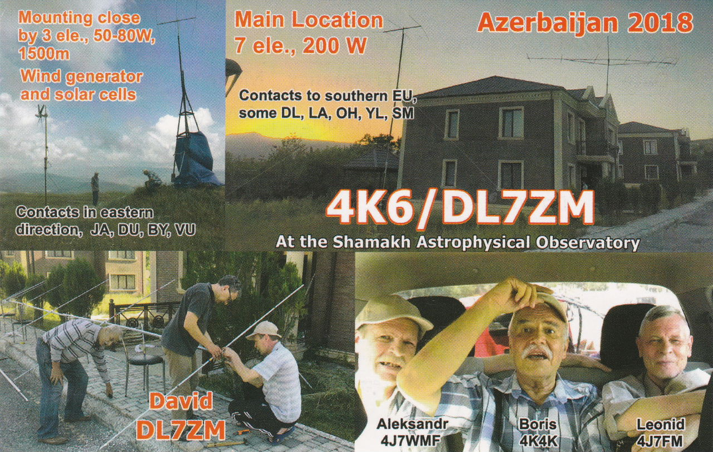

Flash ! DX
|
Who said 6M was a dead band ?
|
(注)
このReportをご覧になる方へ
[Back Issuest Feb.2019]
TIME:UTC(JST-09:00)
Report from JA1RJU(PM95sq)
28.Feb.2019(15:00c)
Report from JA1RJU(PM95sq)
27.Feb.2019(15:00b)
Report from JA1RJU(PM95sq)
26.Feb.2019(15:00b)
Report from JA1RJU(PM95sq)
25.Feb.2019(15:00b)
Report from JA1RJU(PM95sq)
24.Feb.2019(15:00b)
Report from JA1RJU(PM95sq)
23.Feb.2019(15:00b)
Report from JA1RJU(PM95sq)
22.Feb.2019(15:00c)
-----------------------------------------------------------------
PJ2T 12:57 50.195 JT65a EME CQ into JO1PSX
(JG2BRI 13:27 50.187 JT65a -24dB EME CQ into KA9CFD)
(JG2BRI 13:43 50.187 JT65a -30dB EME CQ into KA9CFD)
-----------------------------------------------------------------
◎ PJ2T 50.195MHz Try to=>JO1PSX.VK3DUT.NN7J.VE1JF(QSO).JS2CQA.K1SIX
-----------------------------------------------------------------
Report from JA1RJU(PM95sq)
21.Feb.2019(15:00c)
-----------------------------------------------------------------
PJ2T 11:00 50.195 JT65a -29dB EME CQ into JG2BRI
PJ2T 11:08 50.195 JT65a -26dB EME CQ into JG2BRI
W6UC 11:19 50.195 JT65a -21dB EME into JA7QVI
(JG2BRI 13:09 50.187 JT65a -30dB EME CQ into KA9CFD)
(JG2BRI 13:13 50.187 JT65a -25dB EME CQ into W5ADD)
W6UC 13:46 50.185 JT65a -26dB EME CQ into JG2BRI
K5NA 13:46 50.185 JT65a -26dB EME CQ into JG2BRI
-----------------------------------------------------------------
◎ W7GJ Report=>VE1JF -13dB. N7NW -19dB. JS2CQA -25dB.etc
PJ2T Report=>VE1JF -23dB. N7NW -22dB. JS2CQA -23dB. W6UC -21dB.etc
-----------------------------------------------------------------
Report from JA1RJU(PM95sq)
20.Feb.2019(19:00d)
-----------------------------------------------------------------
NN7J 09:16 50.181 JT65a -23dB EME into JG2BRI
WP4G 10:08 50.187 JT65a -26dB EME into JG2BRI
VE1JF 10:40 50.192 JT65a -26dB EME ↓
PJ2T 10:13 50.195 JT65a -23dB EME QSO with JG2BRI
PJ2T 10:52 50.195 JT65a -24dB EME QSO with JA7QVI
AC4TO 11:53 50.193 JT65a -28dB EME CQ into JG2BRI
AC4TO 11:56 50.193 JT65a -24dB EME CQ into JG2BRI
ZL7DX 17:49 50.191 JT65a -23dB EME CQ into JG2BRI(RPT from DXSCAPE)
ZL3NW 18:39 50.198 JT65a -24dB EME CQ into ↓
-----------------------------------------------------------------
Report from JA1RJU(PM95sq)
19.Feb.2019(19:00d)
-----------------------------------------------------------------
VK4WTN 08:48 50.181 JT65a -25dB EME into JG2BRI
NN7J 09:16 50.181 JT65a -23dB EME into JG2BRI
WP4G 10:08 50.187 JT65a -26dB EME into JG2BRI
VE1JF 10:40 50.192 JT65a -26dB EME ↓
VE1JF 11:01 50.192 JT65a -26dB EME into JG2BRI
VE1JF 11:05 50.192 JT65a -18dB EME CQ into JA1/2
↓
K5NA 12:48 50.197 JT65a -21dB EME CQ into JG2BRI(RPT from DXSCAPE)
ZL7DX 15:42 50.181 JT65a -26dB EME CQ into ↓
IK3SCB 17:27 50.193 JT65a -26dB EME into ↓
I0KIB 17:30 50.191 JT65a -29dB EME CQ into ↓
TR8CA 18:13 50.187 JT65a -28dB EME CQ into ↓
VK4WTN 18:40 50.181 JT65a -25dB EME CQ into JG2BRI(RPT from DXSCAPE)
-----------------------------------------------------------------
◎ 2月19日(火)の深夜(正しくは 2月20日(水）0時54分JSTは"満月の瞬間"。
月が地球に最も接近するこの満月は平成最後の“スーパームーン”。
2019年で最も大きい満月は、関東地方は生憎の降雨で残念ながら見えなか
ったものの、6mでのEMEの通信には絶好のチャンスとなり日本からは月の出
となる夕方の北米方面(AZ＝約80度)から深夜のヨーロッパまでトライして
いる局が多かった。
-----------------------------------------------------------------
Report from JA1RJU(PM95sq)
18.Feb.2019(15:00c)
-----------------------------------------------------------------
VK4WTN 08:08 50.188 JT65a -27dB EME QSO with JG2BRI(RPT from DXSCAPE)
VK3DUT 08:27 50.185 JT65a -26dB EME CQ into ↓
WP4G 09:07 50.188 JT65a -26dB EME CQ into ↓
K5NA 12:01 50.188 JT65a -26dB EME CQ into ↓
G3BCG 16:34 50.190 JT65a -14dB EME CQ into JG2BRI(RPT from DXSCAPE)
-----------------------------------------------------------------
Report from JA1RJU(PM95sq)
17.Feb.2019(15:00c)
-----------------------------------------------------------------
R6KA 12:52 50.187 JT65a -24dB EME CQ into JG2BRI(RPT from DXSCAPE)
TR8CA 12:52 50.187 JT65a -29dB EME CQ into ↓
-----------------------------------------------------------------
Report from JA1RJU(PM95sq)
16.Feb.2019(16:00c)
-----------------------------------------------------------------
V84SAA 05:15 50.190 JT65a -26dB EME CQ into JG2BRI(RPT from DXSCAPE)
W7GJ 06:44 50.198 JT65a -19dB EME CQ into ↓
LY2BAW 11:54 50.190 JT65a -23dB EME CQ into ↓
TR8CA 15:29 50.186 JT65a -30dB EME CQ into JG2BRI(RPT from DXSCAPE)
-----------------------------------------------------------------
Report from JA1RJU(PM95sq)
15.Feb.2019(15:00b)
Report from JA1RJU(PM95sq)
14.Feb.2019(15:00b)
Report from JA1RJU(PM95sq)
13.Feb.2019(15:00b)
Report from JA1RJU(PM95sq)
12.Feb.2019(15:00b)
Report from JA1RJU(PM95sq)
11.Feb.2019(15:00b)
Report from JA1RJU(PM95sq)
10.Feb.2019(15:00b)
--------------------------------------------------------------
◎ 11:00JST頃から12:30JST頃にかけてJA1からJA4/5/6方面への強力な
Es伝搬あり。
--------------------------------------------------------------
Report from JA1RJU(PM95sq)
09.Feb.2019(15:00b)
Report from JA1RJU(PM95sq)
08.Feb.2019(15:00b)
Report from JA1RJU(PM95sq)
07.Feb.2019(15:00b)
Report from JA1RJU(PM95sq)
06.Feb.2019(15:00b)
Report from JA1RJU(PM95sq)
05.Feb.2019(15:00b)
Report from JA1RJU(PM95sq)
04.Feb.2019(15:00b)
Report from JA1RJU(PM95sq)
03.Feb.2019(15:00b)
Report from JA1RJU(PM95sq)
02.Feb.2019(15:00b)
Report from JA1RJU(PM95sq)
01.Feb.2019(15:00b)
-----------------------------------------------------------------
(JS6TKM 08:12.45 50.313.1879 FT8 -06dB CQ(PL24) into JA1)
(JS6TKM 08:14.45 50.313.1777 FT8 -02dB QSO with JA1/2/3)
↓
(JS6TKM 08:56.15 50.313.1879 FT8 -12dB QSO -12dB/-03dB Es)
↓
(JS6TKM 09:12.45 50.313.1879 FT8 -12dB CQ -18dB Es)
-----------------------------------------------------------------


今年もEsシーズンに期待！？
--------------------------------------------------------------
◎ SSN最低期を迎えた2019年でしたが、新年早々の元旦にVK/ZLのオープ
ンがあり、幸先の良いスタートでした.しかし、その後は6日、16日に短
時間のオープンが見られただけで、月の後半は"静かな6mバンド"で終わ
ってしまいました。このSSN最低期を迎えたコンディションでは春のDX
入感は期待出来ないので、この状態は春から夏に掛けてのEsシーズンま
で暫くものと思われます。
--------------------------------------------------------------